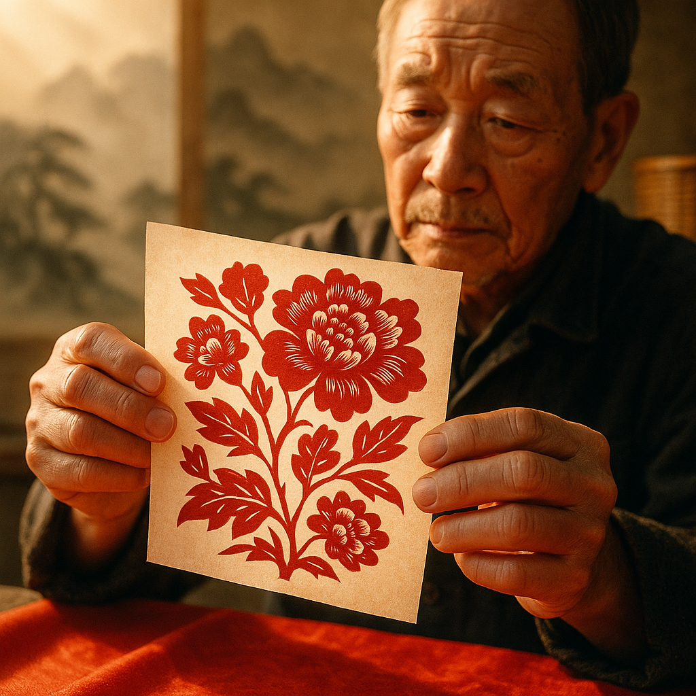
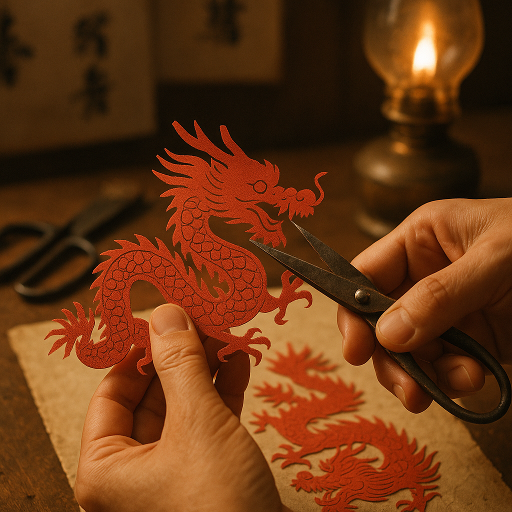
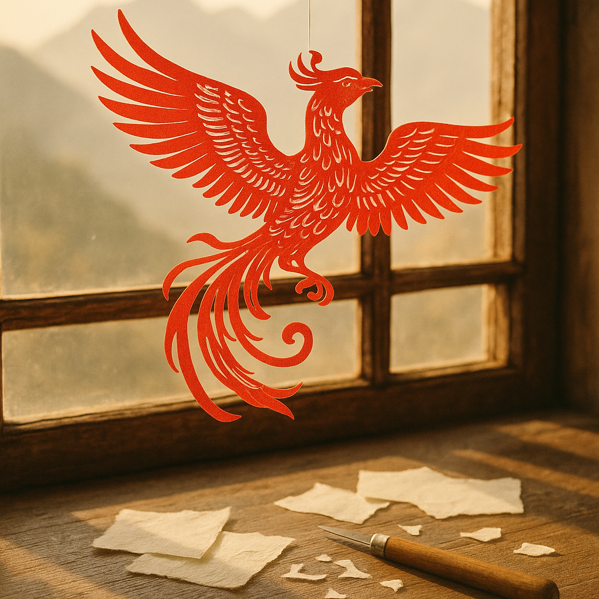
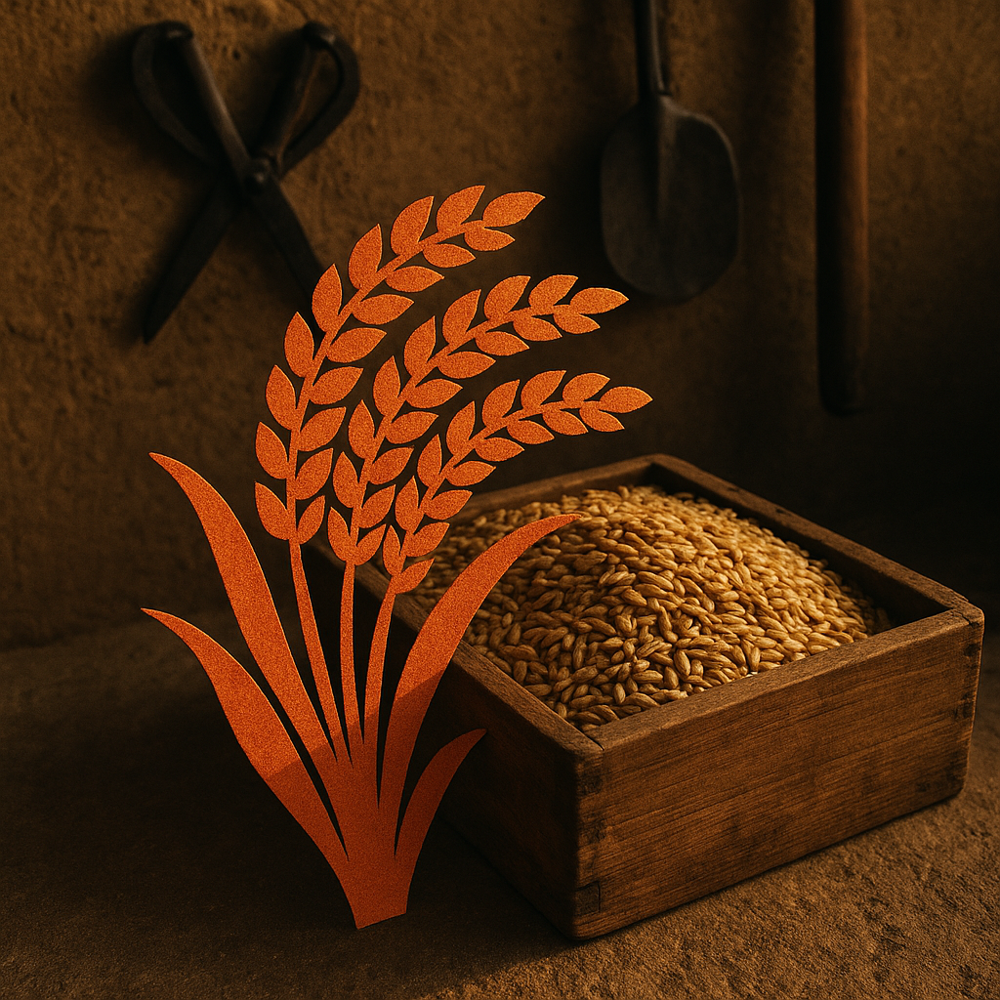
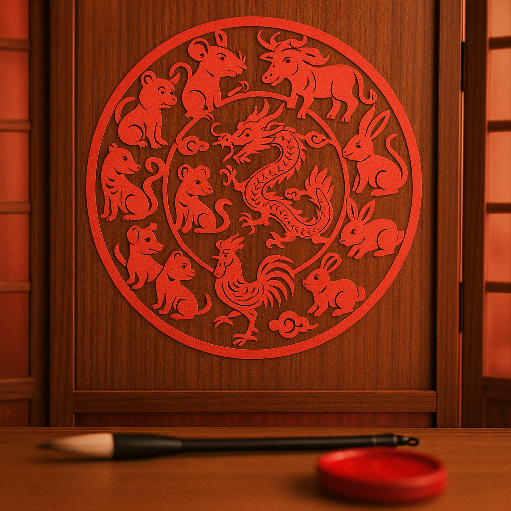
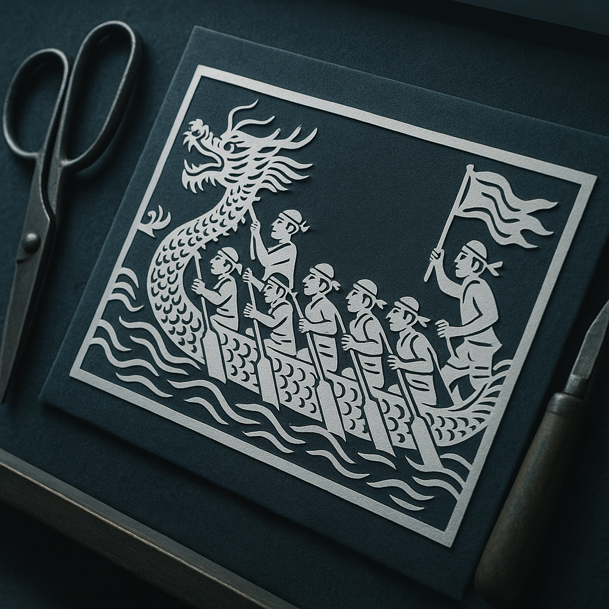

"The joy of a single cut rivals the work of the gods; beauty among the people never fades."— Guo Moruo
HISTORY & ORIGIN
The invention of paper gave the craft its medium. Cutting with knives instead of brushes, people first used paper for rituals and decoration; the patterns were plain, yet already full of life and faith.
Paper cutting spread widely in the Tang dynasty. Courts and commoners loved it equally; subjects ranged from flowers, birds and auspicious beasts to figures and stories, making it an essential visual symbol of festivals and ceremonies.
Artists and workshops devoted to paper cutting appeared, and the craft became a commercial, everyday art. Window flowers, mounted pictures and clothing patterns multiplied, and regional styles grew ever more distinct.
Folk paper cutting reached its height, with the northern school bold and free and the southern school delicate and lively. It became an indispensable festive touch in ordinary households.
Chinese paper cutting was inscribed by UNESCO on the Representative List of the Intangible Cultural Heritage of Humanity, moving from village windowsills to the world stage and becoming a key symbol of Chinese culture.
TRADITIONAL CRAFT
Cutting away the blank space around the outline while keeping the line structure. The picture is rich in empty space with a clear rhythm; common in auspicious patterns and festive window flowers, it shows ingenuity within simplicity.
The background is cut away and the motif itself is kept, giving solid and vigorous forms. Folk artists in the north often use it for characters such as "Fortune" and "Longevity", with meanings that are weighty and direct.
Yin and yang carving are used together in a single piece so that solid and void generate each other and the layers read clearly. It is the advanced form in which mature technique and artistic expression meet.
Paper is folded and cut as one block; unfolded, it becomes a symmetrical pattern. Often used for round medallions and snowflakes that stand for completeness, it is one of the most familiar forms of childhood memory.
Multi-colored paper is pieced together or dyed, breaking the limit of a single red. Color and form set each other off, giving traditional paper cutting new life in modern spaces.
Knives take the place of scissors for finer lines, and several sheets can be cut at once for batch work. It is common in fine binding, cultural products and large decorative pieces.
ART GALLERY






"Cutting gold into ornaments carries on the customs of Jing; cutting colored paper into figures began the fashion of Jin."— Li Shangyin, Tang Dynasty